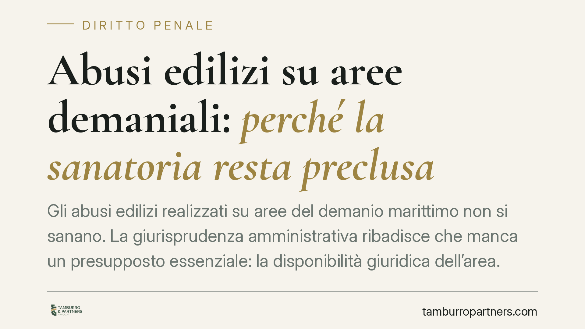

Abusi edilizi su aree demaniali: perché la sanatoria resta preclusa
Gli abusi edilizi realizzati su aree del demanio marittimo non si sanano. La giurisprudenza amministrativa ribadisce che manca un presupposto essenziale: la disponibilità giuridica dell'area. Per i concessionari di stabilimenti balneari ciò significa demolizione come atto vincolato e, sul versante penale, un reato che non si estingue. Un tema con conseguenze concrete e immediate.

Nota sulla verifica delle fonti
Prima di entrare nel merito, una precisazione di metodo. Gli estremi della pronuncia richiamati nella fonte giornalistica (una sentenza del TAR Lazio con numerazione e anno in corso) non risultano verificabili al momento della redazione con la certezza necessaria. Trattiamo pertanto il tema a livello di principio consolidato, senza attribuire affermazioni a un numero di sentenza non confermato. È una cautela doverosa: citare una pronuncia inesistente o con dati errati è un errore che non ci permettiamo.
Il caso tipo
Lo scenario ricorrente riguarda il concessionario di uno stabilimento balneare che realizza opere non assentite su un'area del demanio marittimo: strutture fisse, ampliamenti, manufatti che eccedono il titolo concessorio. L'amministrazione comunale accerta l'abuso e ordina la demolizione. Il concessionario tenta la strada della sanatoria. È qui che emerge il nodo giuridico.
Inquadramento normativo
La sanatoria edilizia ordinaria (art. 36 del D.P.R. 380/2001, Testo Unico Edilizia) richiede la cosiddetta doppia conformità: l'opera deve essere conforme alla disciplina urbanistica ed edilizia sia al momento della realizzazione, sia al momento della domanda di accertamento di conformità.
Il D.L. 69/2024, convertito con modificazioni (cosiddetto decreto *Salva-Casa*), ha introdotto l'art. 36-bis TUE, che prevede un regime di sanatoria con conformità attenuata per talune difformità parziali. Resta però fermo un presupposto logicamente anteriore a qualunque valutazione di conformità: la disponibilità giuridica dell'area.
Sull'area demaniale il concessionario non vanta un diritto reale, ma un titolo d'uso temporaneo e revocabile. Non può quindi disporre del suolo per legittimare un'opera stabile. Manca il presupposto stesso dell'istanza di sanatoria. A ciò si aggiunge l'art. 35 TUE, che per gli interventi su suoli di proprietà pubblica disciplina la demolizione e l'acquisizione con un procedimento specifico e particolarmente rigoroso.
La demolizione come atto vincolato
L'ordine di demolizione dell'abuso edilizio non è espressione di discrezionalità amministrativa: è un atto vincolato. Accertato l'abuso, l'amministrazione non sceglie se intervenire, ma deve intervenire. Ne discende una conseguenza processuale rilevante: i motivi di ricorso fondati sul difetto di motivazione o sulla mancata ponderazione di interessi hanno scarse possibilità di accoglimento, perché su un atto vincolato non vi è interesse da ponderare.
Il profilo penale
Qui il tema tocca il diritto penale, spesso trascurato in questa materia. L'art. 44 del D.P.R. 380/2001 punisce con sanzioni penali l'esecuzione di lavori in assenza o in difformità dal titolo abilitativo. L'abuso edilizio non è quindi solo questione amministrativa: configura un reato contravvenzionale.
Il collegamento con la sanatoria è diretto. L'art. 45 TUE prevede che il rilascio del titolo in sanatoria estingua i reati contravvenzionali previsti dalle norme urbanistiche. Ma l'effetto estintivo presuppone una sanatoria conseguibile. Se l'opera è insanabile — come quando manca la disponibilità giuridica dell'area demaniale — non vi è alcun provvedimento favorevole che possa estinguere il reato. Il procedimento penale prosegue secondo il suo corso ordinario.
È un punto da chiarire al cliente fin dall'inizio: sul demanio marittimo la via della sanatoria non è solo difficile sul piano amministrativo, ma non offre nemmeno la copertura estintiva sul piano penale.
Implicazioni pratiche per il concessionario
Chi gestisce uno stabilimento balneare deve considerare che le opere non assentite su area demaniale espongono a un duplice rischio: l'ordine di demolizione come atto dovuto e il procedimento penale per il reato edilizio. La difesa, in questi casi, raramente può giocarsi sui vizi formali del provvedimento. Il terreno utile è semmai quello dei presupposti di fatto: la corretta qualificazione dell'intervento, l'effettiva natura abusiva dell'opera, l'esatta perimetrazione dell'area demaniale coinvolta.
Cosa fare in concreto
- Verificate il titolo concessorio e l'esatto perimetro di ciò che è assentito prima di qualunque intervento edilizio sull'area.
- Non confidate nella sanatoria come soluzione standard: su area demaniale il presupposto della disponibilità giuridica è di norma assente.
- Agite subito alla ricezione dell'ordine di demolizione: i termini per impugnare sono brevi e l'inerzia aggrava la posizione.
- Impostate la difesa sui presupposti di fatto, non sui soli vizi motivazionali, data la natura vincolata del provvedimento.
- Valutate il profilo penale con il difensore fin dalla prima contestazione, tenendo presente che la mancata sanatoria preclude l'estinzione del reato ex art. 45 TUE.
Disclaimer
Contributo informativo a cura di Tamburro & Partners - Avv. Giuseppe Tamburro. Non costituisce parere legale.
Ogni condominio ha una storia a sé.
Se gestisci un'amministrazione e vuoi un confronto su una specifica questione condominiale, scrivi allo studio. Ti rispondiamo entro un giorno lavorativo.